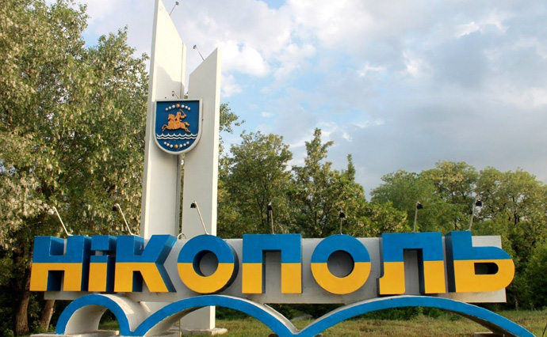
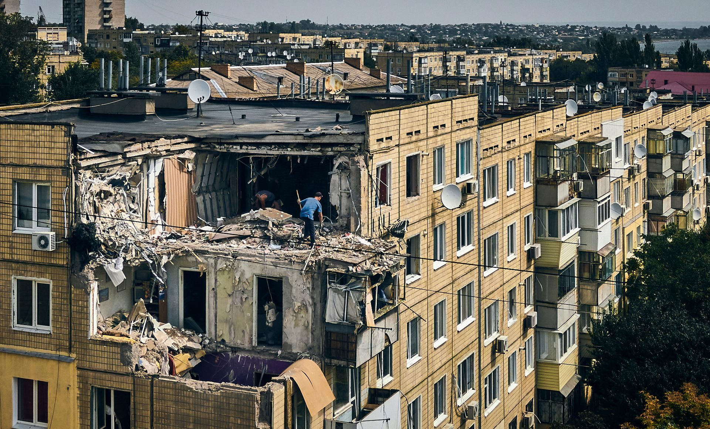

Нікополь — місто на півдні Україні, моя Батківщина, місто де я народився, місто де я провів більшу частину свого життя. Четверте за чисельністю населення місто Дніпропетровської області. Центр Нікопольського марганцевого басейну. У місті працюють два підприємства металургійної та декілька машинобудівної промисловості.

Вид з місцевої дамби на АЄС у місті Енергодар.

З тимчасово окупованого міста Енергодар майже щодня ведуться обстріли мого рідного міста, моєї Батьківщини. Дуже прикро спостерігати за тим, як руйнується твоє рідне місто, відчуття неначе частинка тебе зникає. Проте я вірю в нашу перемогу! Все буде Україна!